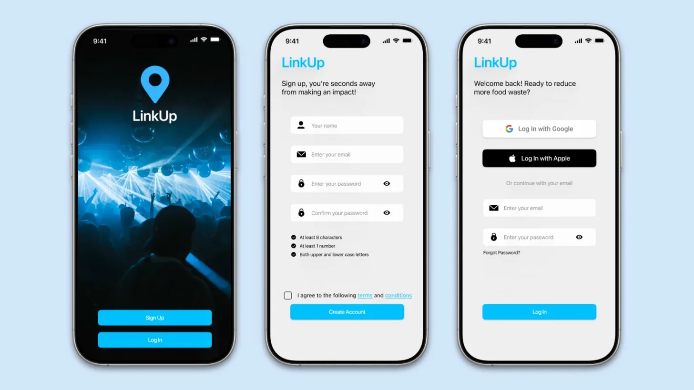
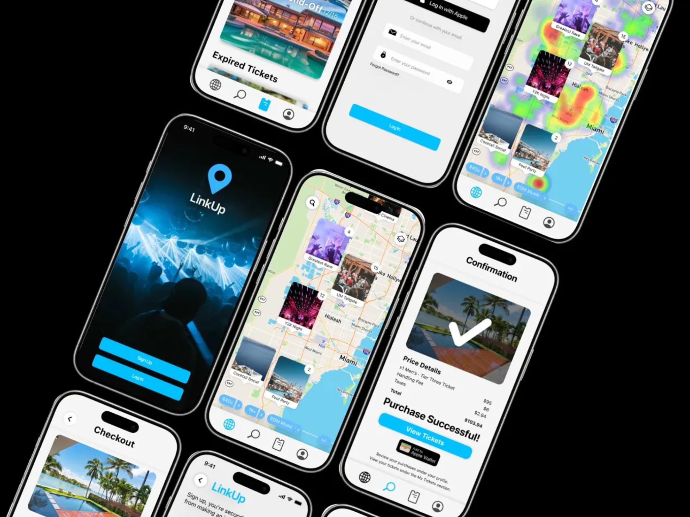
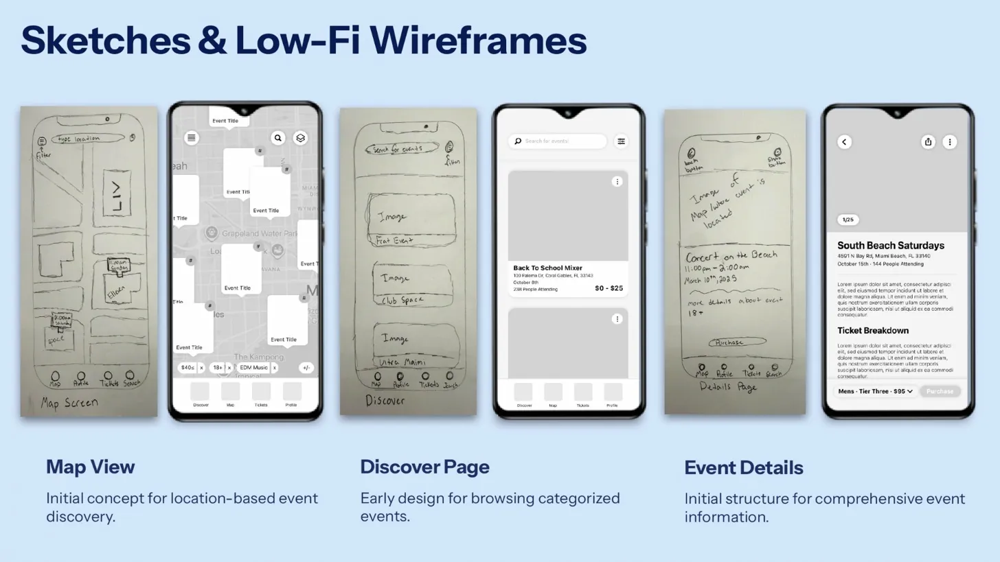
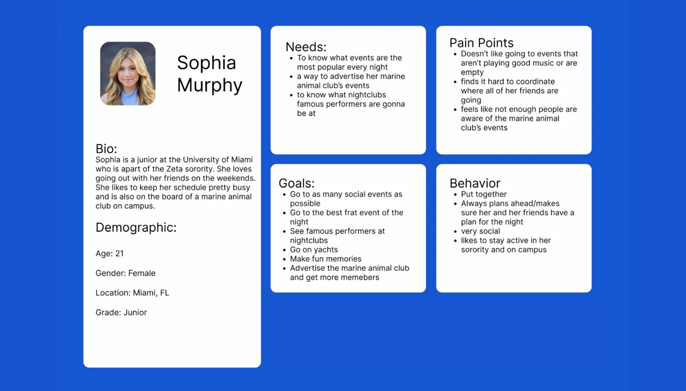
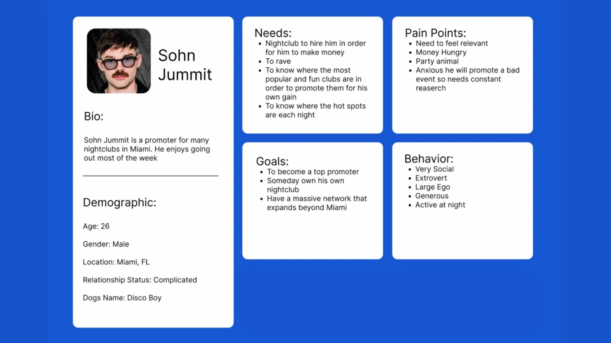
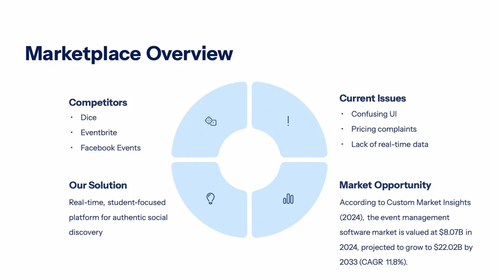
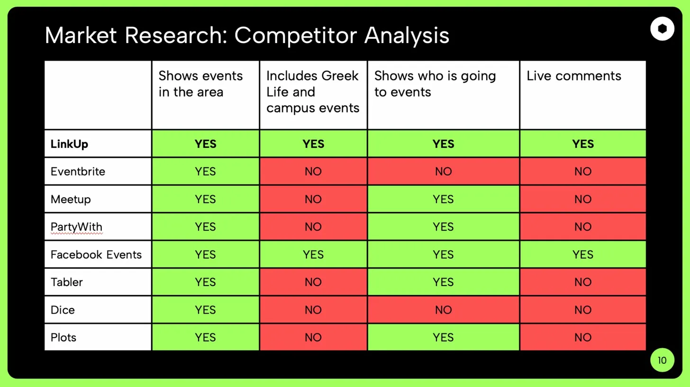
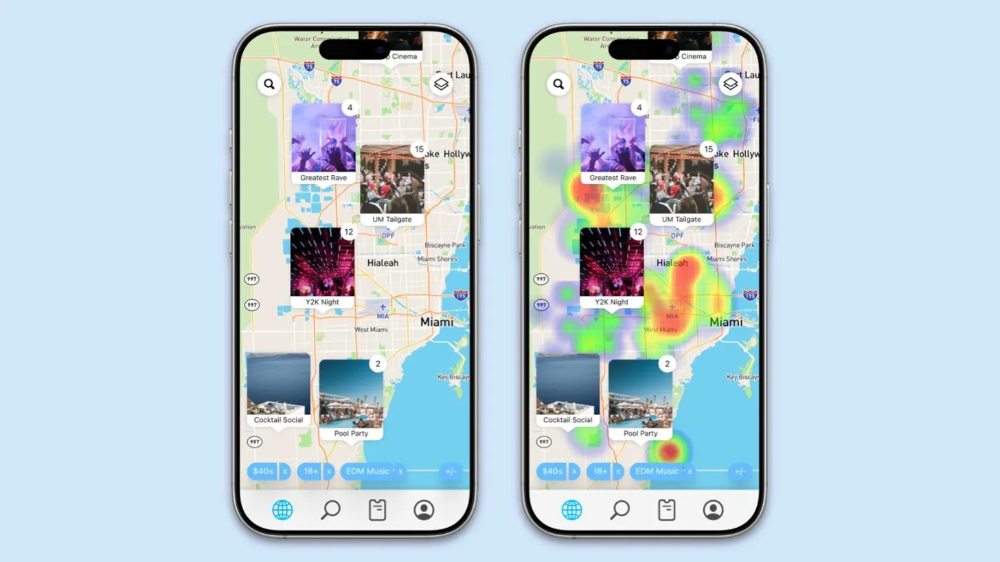
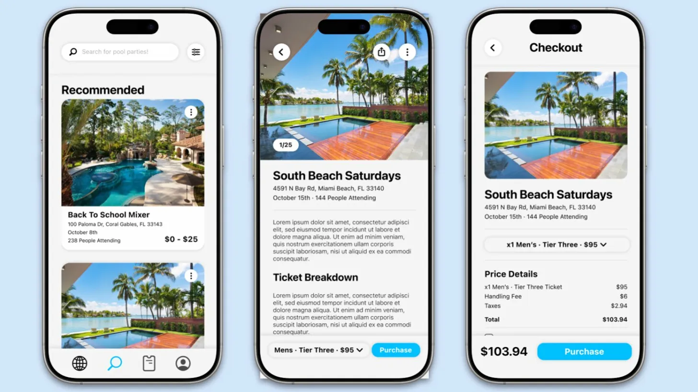
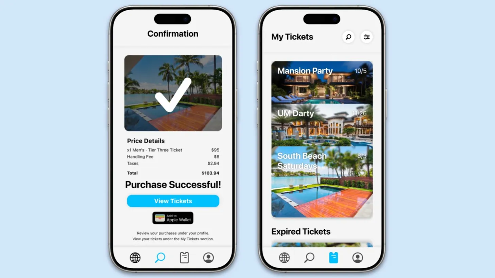

Real-Time Event Discovery for College Students
LinkUp helps students find events, view live crowd activity, and coordinate plans with friends in real time.

About the App
Planning a night out should be simple. LinkUp was designed to reduce the stress of finding good events, checking if places are actually active, and deciding where to go with friends.
The app focuses on real-time event discovery, crowd visibility, and quick social planning for college students and young adults.
Core Features
Live Map Discovery
Users can view events on a map and quickly understand where activity is happening nearby.
Social Coordination
LinkUp helps students coordinate with friends and spend less time stuck in group chats.
Event Mood Tracking
Quick vibe checks help users understand the type of crowd, energy, and experience before going out.
Wireframes

Early sketches focused on map-based discovery, event browsing, and event details.
Persona 1

Sophia represents students who want to find popular events and coordinate with friends easily.
Persona 2

Sohn represents nightlife promoters who need real-time information about where people are going.
Market Overview

Research showed problems in current platforms such as confusing interfaces, pricing complaints, and lack of live data.
Competitive Analysis

LinkUp stands out by combining local events, student-focused content, social visibility, and live comments.
Design Goal
The goal of LinkUp is to help students spend less time planning and more time socializing by using simple, live, and location-based event tools.
App Screens

Map + Heatmap

Discover + Checkout

Tickets
Why LinkUp Works
Real-Time Data
Students can see where crowds are active instead of relying on outdated event pages.
Simple Discovery
The app combines a clear map, event cards, and quick scanning for nearby plans.
Social Planning
Friend-based decision making is a big part of nightlife planning, so LinkUp supports it directly.
FAQ
LinkUp is mainly designed for college students and young adults looking for nightlife and social events.
It focuses on live popularity, social coordination, and a student-centered experience.
The main focus was reducing planning stress and helping users make faster decisions in real time.